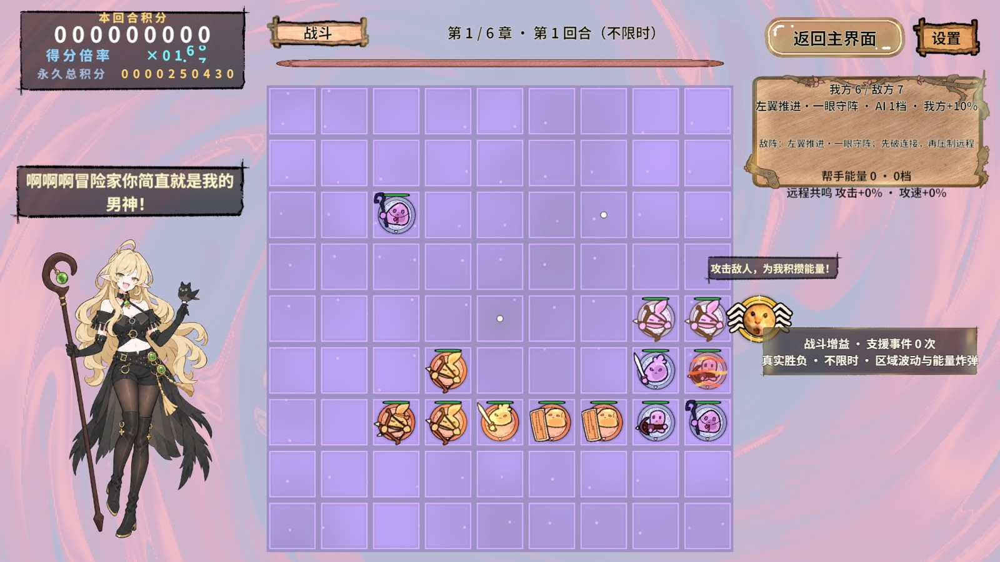
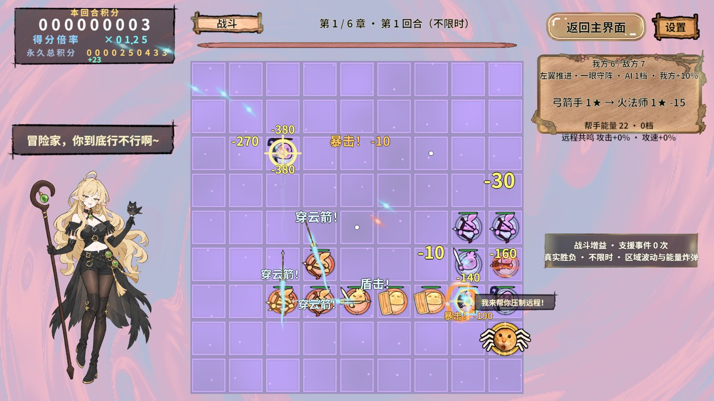
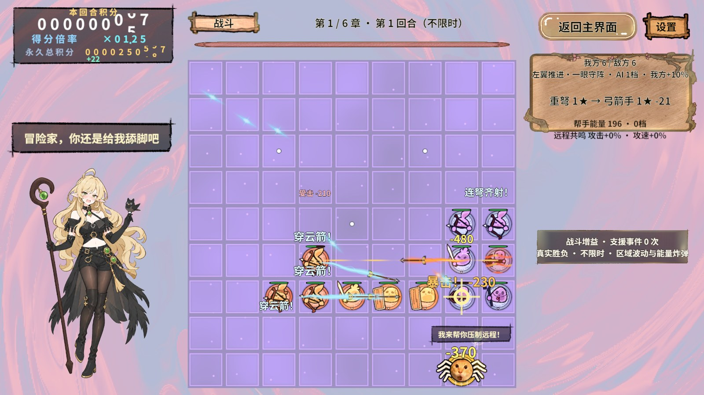
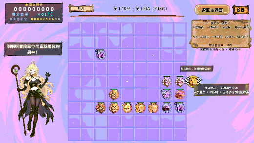

配置与构建
源文件为配置表/鸦鸦互动配置.xlsx中的YayaReactionLine。ID 1～36的Text全部更新，另外6个字段及YayaReactionRule保持源表原样；导出36行×7字段与Excel逐项相同。新文案4～20字符，表情仍为1/2/3/8/13/14/23/26，不新增图片。
RevCLI执行excel.plan → excel.read → excel.export：扫描24表、750行，25个输出不变，仅写入YayaReactionLine.txt，生成代码不变，错误/警告/孤立表均为0。使用现有工具重制字库，1749字符全部可用（原1745字符）。
game.yaya-reaction.rules的两模式配置和8项分类检查通过；AB依赖门禁canBuild=true，无重复同名、共享重复、循环或映射错误。使用game.background.build调用项目GameResourceBuild.BuildAndCopy，构建76个PC包；Assets/StreamingAssets/PC与构建输出的155个非meta文件SHA256全部相同。保留已有meta GUID。
运行期精确核对
通过真实rev_discover确认能力，rev_call从StartScene开启隔离进度和真实AB模式；rev_run沿大厅→选关→第一章进入，等待过场结束、81格与准备增益完成，再布阵并开始战斗。三档事实窗口经正式分类器、图集和池实例显示，按返回lineId对照新表Text，全部一致。
| 台词ID | 档位 | 真实显示文案 | 断言 |
|---|---|---|---|
| 6 | 1 | 啊啊啊冒险家你简直就是我的男神！ | 与导出表一致，无遮挡且完整 |
| 23 | 2 | 冒险家，你到底行不行啊~ | 与导出表一致，无遮挡且完整 |
| 30 | 3 | 冒险家，你还是给我舔脚吧 | 与导出表一致，无遮挡且完整 |
三次立绘高度均为屏幕56.16%，保持原版两倍，台词完整且无遮挡。返回大厅后再次进入战斗复核新文案、尺寸与排版通过。两份rev_run的全部步骤与finally均通过；最终Console错误0，测试已停止并解除隔离，恢复StartScene编辑态。
真实画面




框架可行性与范围
Revolution现有Excel导出、强类型配置、RevResManager资源加载、图集与RevPool角色租约、RevRuntimeAutomation验收链支撑本次文案更新，无需修改框架快照。冷启动与重入证明本次新数据和字库实际进入PC资源包，工具成功不单独作为业务通过依据。
本次“打包”为PC AssetBundle资源包，未构建EXE/APK，未做独立Player或真机验证。原始JSON/PNG位于.codex/work/yaya-export-2026-11-06，不归档ZIP或Profiler文件。旧导表脚本的相对source路径曾读表失败，改用当前Unity已配置的有效来源后预览/读取/导出成功，未跳过坏表。